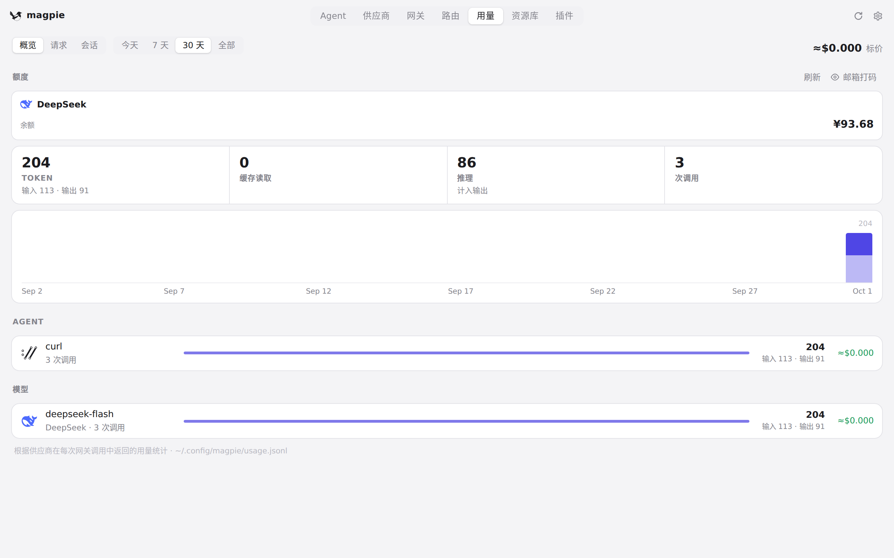
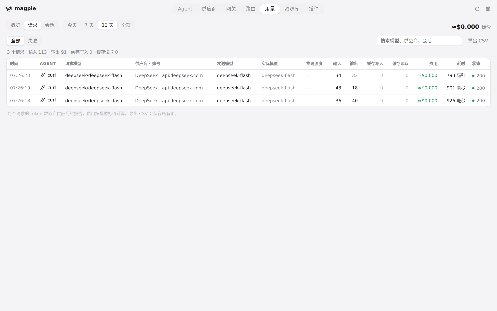
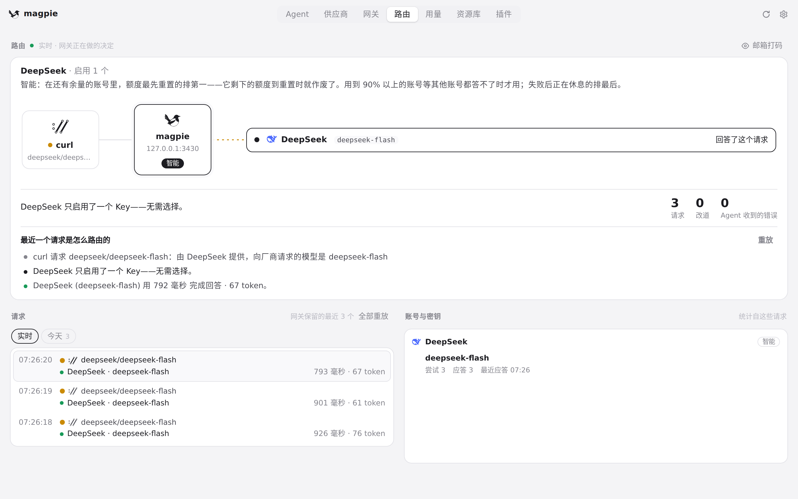
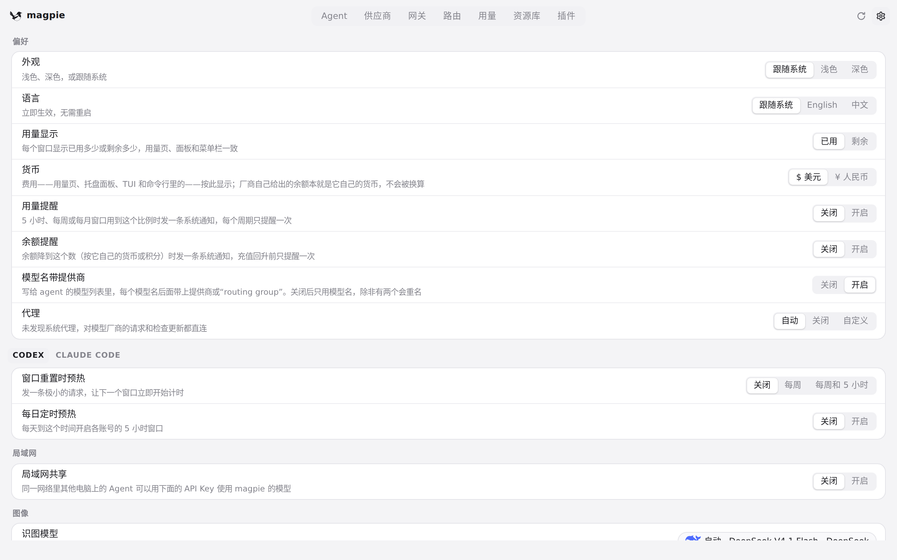

#391 界面预览
commit 8e1426c · 回到 PR · 这个 diff 给 magpie web 加了一套只在小屏／触屏（≤760px，或 pointer: coarse 且 ≤1024px）生效的响应式样式：顶栏导航自成一横行并可横向滚动、用量页筛选换行且搜索独占一行、图表日期标签按宽度隐藏、设置／供应商／路由组表单改为单列堆叠、模型选择器限制在视口内且触屏不自动聚焦，另外改了触摸惯性滚动的手势判定和窄屏下不再收缩顶栏。
红线是鼠标走过的轨迹，红色圆环是一次点击；底部文字是这一步在做什么。空格暂停，← → 逐段查看。

用量页：图表日期与请求筛选 · 1280×800 下的用量页概览：KPI、图表日期标签、Agent 与模型统计

用量页：图表日期与请求筛选 · 切到「请求」后，列表上方的搜索框与筛选控件
路由页：路由组与分组编辑器 · 路由页：实时路由、最近的请求、账号统计与「路由组」区域

路由页：路由组与分组编辑器 · 点「新建组」后打开的路由组编辑器

设置页的偏好行 · 设置页顶部的偏好行：外观、语言、用量显示、货币